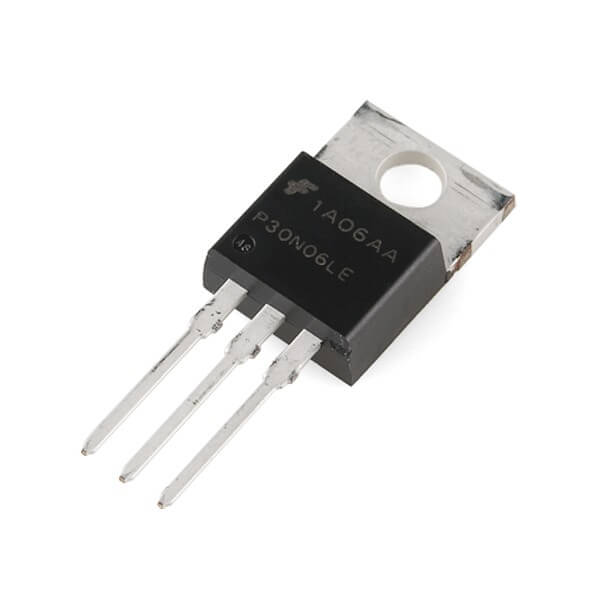

Njord Project
Build an awesome drone from scratch
準備
第一課の記事でプロジェクトの目標の説明をしました。前回から、私たちは具体的にドローンの事について考え始めました。第二課の記事で私たちは選んだコンポーネントと、予想した電子回路を紹介します。
仕様
初めにドローンの最先端について調べました。実は、ドローンの種類がたくさんあります。小さいドローンや、大きなドローンがあります。そして、攻撃的なドローンや、調査するドローン、ハイブリッドなドローンがあります。私たちはハイブリッドなドローンが必要です。私たちは分析地域の地形図を描きたいので、ドローンと下の物との間隔を測るために超音波センサーを使います。それから、ドローンはゆっくりと飛ぶ必要がありません。でも、出来るだけ多くの情報を記録するために、あまりに速過ぎるのもだめです。更に、実践理性から、分析の周期で充電を要らないドローンの方が良いです。
既に実在するドローンの中で、私たちが興味を持っているBitcrazeのCrazyflieは小さくて、open sourceプロジェクトで、コンポーネントを簡単に買う事ができます。

あの小さいドローンにもとずいて私たちのドローンを決めました。実は、私たちのはCrazyflieと同じぐらい大きいです。更に、電子とモーターとブレードも同じです。けれど、他のコンポーネントは違います。何もからドローンを作る事が主要な目標だから、Crazyflieが直に買いたくないです。そして、あのロボットは攻撃的すぎますから、私たちの欲しい使用ために合いません。
学年の始まりにArduinoの授業がありました。もし、C言語を学んだ事がありますと、Arduinoは易しく学べます。だから、マイクロコントローラの事はテクノロジを提案するArduinoが選びました。得にArduino Pro Miniを選びました。あのボードの主要な利益が小さくて軽いです「18x33mm, 2g」。そして、アナログとデジタルとPulse With Modulation (PWM)ピンが十分にあります。

ドローンの安定を補佐するためにコンポーネントがあるのが大事です。ドローンは傾斜の角を永続性に分からなければなりませんから、ジャイロスコープが要ります。Arduinoはジャイロスコープと加速度計の電子回路を提案します。MPU-6050です。あの電子回路はマイコロコントローラと同じぐらい大きくて軽いです「25.5x15.2mm, 1.5g」。後、私たちが加速度計必要とする理由を説明します。

しばらくの間、場所の中に位置の方法を知っていますかと思いました。明らかにGPSについて思いましたが、安いGPSの正確は十分に正確ではありません。もし、外の大きな地帯で調査japonaisしたら、足ります。けれど、このプロジェクトは教室で行われますから、「メートル」の正確は不正確過ぎます。「デシメートル」の正確が必要です。他の解決に言及しました。アンテナのネットワークで三角測量をすると思いましたが、この解決は重くて高過ぎます。
結局、私たちは知っている人が加速度計を使うと勧めました。加速度計はシステムの線形加速器を慎むコンポーネントです。システムの線形加速器を知って、速さを計算して、場所で変位を計算できます。これから、あの解決を選びました。
第一課の記事で説明した通り、ドローンはサーバーで伝えます。だから、この機能を満たすためにコンポーネントを選びました。初めに、無線通信の議定書のIEEE 802.15.4で伝えるXBeeを使うと思いました。けれど、あのコンポーネントは高いから「3360円ぐらい」、他の解決を思いました。 結局、2.4GHzの無線通信を使うコンポーネントを選びました。他のコンポーネントように、安くて「112円ぐらい」軽くて小さいです「15x29mm, 2g」。
結局、2.4GHzの無線通信を使うコンポーネントを選びました。他のコンポーネントように、安くて「112円ぐらい」軽くて小さいです「15x29mm, 2g」。

ドローンの大多数は各モーターにElectronic Speed Controller (ESC)を使います。あれは速さと回転の方向を制御して助けます。しかし、一台のESCは2240円ぐらいです。だから、クワッドローターのために8960円ぐらいです。代金以外、重さも「25g/ESC」他の解決に考えると強制しました。MOFSETとかコンデンサとかレジスタンスとかArduinoで私たちのESCを作れます。
要するに、以下に私たちは使うコンポーネントの表です：
- Crazyflieのモーター (336円/モーター)
- Crazyflieの電子 (560円)
- Crazyflieのブレード (560円)
- Arduino Pro Miniの電子回路 (560円)
- ジャイロスコープと加速度計の電子回路 (448円)
- 2.4GHzの送受信 (112円)
- MOFSET(560円/10台)
選んだコンポーネントで１台のドローンは3360円ぐらいです。Crazyflieのキットは16800円ぐらいです。しかしながら、このドローンは原型だから、私たちの選択をチェックしなければなりません。多分、私たちは間違っています。私たちのドローンは「35gぐらい」Crazyflieより「19gぐらい」重いから、Crazyflieより遅く移すを願っています。
図式とPCB
コンポーネントを受け取って待っている間に、ロボットの電子回路の図式とPCBを描き始めました：


Fritzingのソフトウェアでこれを描きました。グラフィカルユーザインタフェースで電子回路を思い付き許open sourceすソフトウェアです。Fritzingのファイルで本当な電子回路をプリンと出来ます。
このリンクから私たちの電子図式をダウンロードできます：ドローンの図式.
Crazyflieのように、私たちのロボットは実の車台がありません。電子回路が車台です。明らかに、ドローンは壊れやすいだけど、時間と重さの儲けが良いです。そして、ドローンの使命は「地帯を調査する」危険ではありませんから、損害を受けるの危険が小さくします。しかしながら、ドローンは損害を受けったら、私たちが車台を使い考えます。
これから、皆さんはすべてのコンポーネントを知っています。だから、次の記事で作り方を話します。
よろしくお願いします。